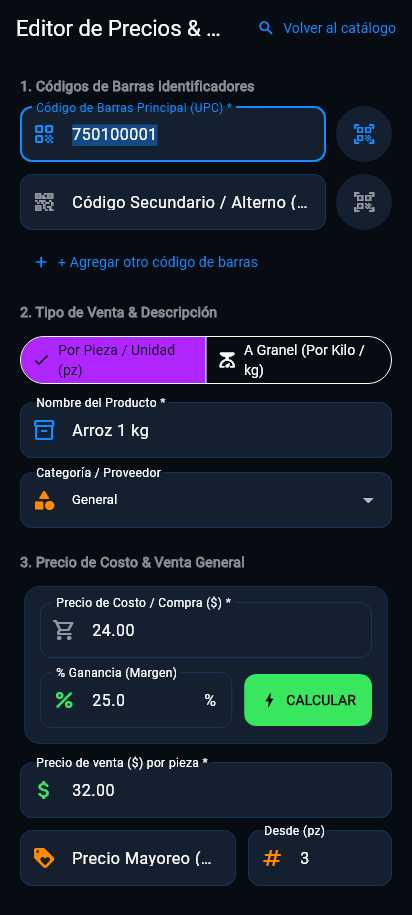
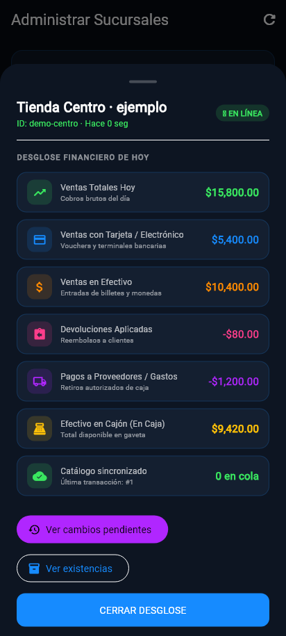

Revisa sin desplazarte
Consulta el último reporte recibido de cada sucursal.
Android · servicio opcional
Tenkai Boss
Consulta qué sucursales están conectadas, revisa sus existencias y operaciones y administra productos y precios desde tu celular. Boss trabaja junto con el servicio Sync para llevar tus cambios a las tiendas.
Boss y Sync se ofrecen en piloto. Solicita disponibilidad, alcance, versiones compatibles y condiciones del servicio.

Hecho para resolver tu trabajo
Consulta el último reporte recibido de cada sucursal.
Crea o modifica productos y precios para las tiendas incluidas en tu organización.
Distingue una tienda conectada de una tienda que ya confirmó la actualización.
Consulta ventas en efectivo y tarjeta, devoluciones, pagos a proveedores y efectivo reportado en caja.
La aplicación en detalle
Funciones según los módulos, permisos y versiones compatibles de tu instalación.
Conexión, turnos abiertos, fecha del último reporte, actualización del catálogo y desglose financiero del día por sucursal.
Búsqueda por nombre o código y edición de los datos del producto.
Alta con las reglas comerciales configuradas para la organización.
Consulta de cantidades por tienda; cada sucursal mantiene sus propias existencias.
Cortes y movimientos reportados, con detalle de las formas de pago disponible.
Reglas de precio, configuración de catálogo y revisión de conflictos cuando se requiere.
Dentro de Tenkai Boss
Ampliar pantallaDistingue tiendas conectadas, activas, sin conexión y actualizadas.
 Ampliar pantalla
Ampliar pantallaBusca los productos y abre su edición.

Ampliar pantallaRevisa datos comerciales antes de publicar un cambio.

Ampliar pantallaVentas, devoluciones, pagos a proveedores y efectivo del último reporte recibido.
Pantallas de las aplicaciones con datos de demostración. La apariencia y las opciones pueden variar según versión, edición y permisos.
Antes de comenzar
Servicio Sync activo, organización y sucursales configuradas, acceso del dueño e internet. Los datos visibles corresponden a lo recibido; una tienda desconectada puede mostrar información anterior.
Empecemos por tu negocio
Cuéntanos cómo trabajas. Te ayudamos a elegir las aplicaciones y módulos que necesitas.